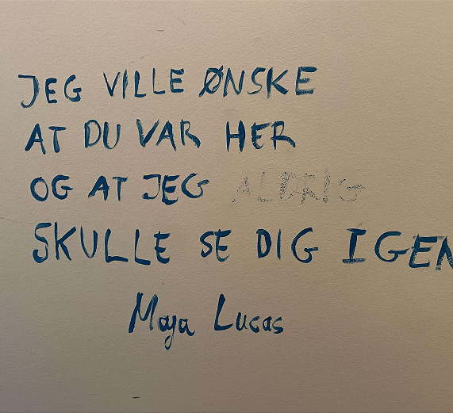
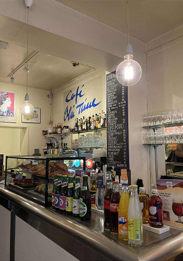
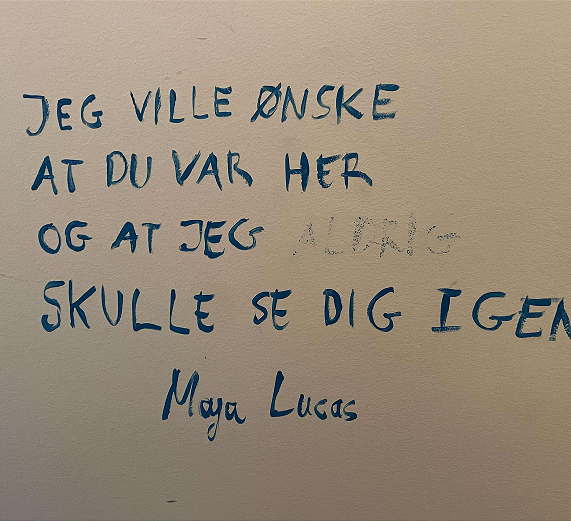
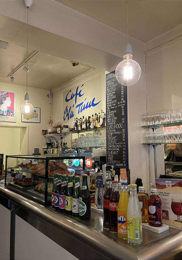

Velkommen til Café Blå Time
– et sted med sjæl, varme og historie.
Café Blå Time har været en del af byens liv siden 1937. Gennem årene har den udviklet sig fra en kaffebutik til det hyggelige mødested, den er i dag.
Siden 1993 har Moshe, caféens altid smilende og imødekommende ejer, budt gæster velkommen med åbne arme.
Hans særlige forbindelse til caféen begyndte, da han som gæst mærkede stedets magi. "Dette sted vil betyde meget for dig," synes væggene at hviske, og kort tid efter overtog han caféen.

MOSHE
Caféen er kendt for sin dagligstuestemning og som et mødested, hvor mennesker samles for at dele gode stunder, nyde kunst og musik og skabe nye forbindelser.
Væggene prydes af værker fra mange kendte kunstnere, som bidrager til caféens unikke atmosfære. Der afholdes også kulturelle arrangementer som kunstudstillinger, jazzkoncerter og forfatteraftener.
Menuen kombinerer det bedste fra fransk og dansk køkken med alt fra smørrebrød til varme gryderetter, altid tilberedt med kærlighed.
Café Blå Time er stedet, hvor historie, kultur og hygge smelter sammen. Et besøg her er som et afbræk fra hverdagens travlhed – og et varmt møde med byens sjæl.

 


